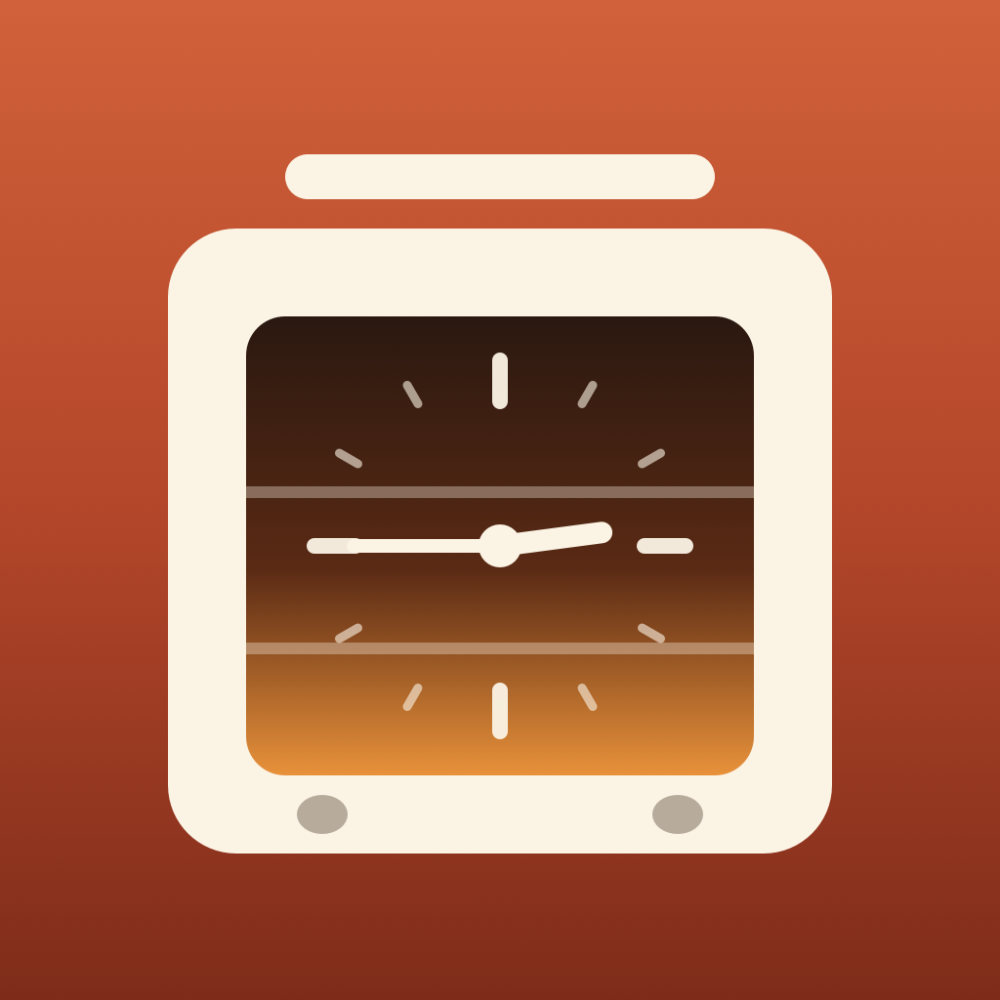

OvenwiseSupport
Answers to common questions are below. If yours isn’t, email k.fitzgerald310@gmail.com with your device model and iOS or iPadOS version.
Planning
How does Ovenwise plan the meal?
Backward from dinner. Each dish is ready at dinner (or earlier, if you set it to be ready before), comes out its rest time before that, goes in its cook time before that, and its prep starts before it goes in. Each oven is preheated before its first dish, turned up or down between dishes, and turned off when it’s done.
What’s a clash?
Two dishes in one oven at different temperatures at the same time, more dishes than the oven’s racks hold, an oven that can’t heat up in time between one dish and the next, more pots than burners, or more dishes than slow cookers or air fryers. Each one is listed on the Plan tab; tap it for fixes.
How are the fixes chosen?
Ovenwise tries each change (the other oven, a longer rest for a roast, cooking a dish at the other’s temperature with its time adjusted, both at a temperature in the middle, starting a dish earlier within how long it can wait, or the air fryer) and re-plans the whole meal to make sure it clears the clash without leaving more clashes than before. The simplest fixes come first. Baking (bread and desserts) isn’t moved off its temperature unless you allow it in the dish.
How accurate are adjusted times?
They’re estimates. A dish cooked 25°F cooler takes a little longer, and Ovenwise adjusts the time for that, but ovens and recipes vary. Check each dish is done, with a food thermometer for meat.
Alarms
Why only the next few alarms?
iOS limits how many alarms an app can set, so Ovenwise sets the next few steps. When you tap Done on an alarm, or open the app, the next ones are set.
Do the alarms reach my Apple Watch?
Yes. Alarms show on a paired Apple Watch, and the Live Activity shows in the Watch’s Smart Stack. There’s no separate Watch app to install.
I didn’t allow alarms.
Ovenwise uses time-sensitive notifications instead. To switch to alarms, turn on Alarms for Ovenwise in the Settings app.
Turkey
Where do the turkey times come from?
The USDA Food Safety and Inspection Service’s “Let’s Talk Turkey” roasting timetable (at 325°F) and its safe-thawing guidance. A turkey is done at 165°F in the innermost part of the thigh and wing and the thickest part of the breast. Follow your recipe and check with a food thermometer.
Ovenwise Pro
What does Pro add?
Unlimited dishes (the free version plans four), a second oven, more than one saved meal, and the templates for Thanksgiving, Christmas, Easter, a Sunday roast and a dinner party. Pro is a one-time purchase with Family Sharing, and there’s no subscription. To restore it on a new device, tap Restore purchase on the Kitchen tab.
Purchases
How do I get a refund?
Apple handles App Store refunds. Request one at reportaproblem.apple.com.
Do I have to pay again on another iPhone or iPad?
No. Sign in with the same Apple Account, open Settings in the app and tap Restore Purchase.